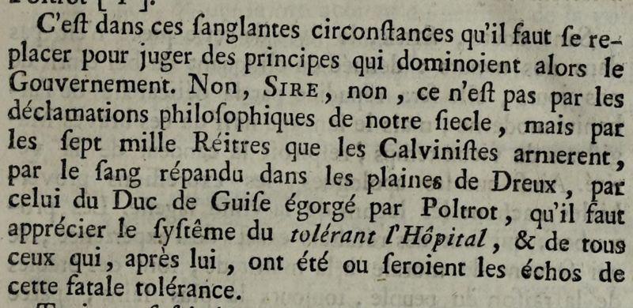

“Cette fatale tolérance” (p. 17)
French: copy dated 1788, part I, p. 17, scan n14. Long s modernised. Highlighted: the sentiment Lecky describes.

It is into those bloody circumstances that we must put ourselves back to judge the principles that then governed the State. No, Sire, no: it is not by the philosophical declamations of our century, but by the seven thousand German horsemen whom the Calvinists armed, by the blood shed on the plains of Dreux, by the blood of the Duke of Guise, murdered by Poltrot, that we must judge the system of the tolerant l’Hôpital, and of all those who after him have been, or would be, the echoes of that fatal tolerance.
Translation: this edition’s draft. “Réitres”: German mercenary cavalry.
Original French
C’est dans ces sanglantes circonstances qu’il faut se replacer pour juger des principes qui dominoient alors le Gouvernement. Non, Sire, non, ce n’est pas par les déclamations philosophiques de notre siecle, mais par les sept mille Réitres que les Calvinistes armerent, par le sang répandu dans les plaines de Dreux, par celui du Duc de Guise égorgé par Poltrot, qu’il faut apprécier le systême du tolérant l’Hôpital, & de tous ceux qui, après lui, ont été ou seroient les échos de cette fatale tolérance.
Lecky (vol. II, ch. V, note 132) offers the pamphlet as evidence that the French Church “having repeatedly asserted the evil of toleration … had no right to complain when the Revolutionists treated her according to her principles”. The page shows the argument he means: toleration as the cause of civil war, and “philosophical” humanity as the enemy.
Further down the rabbit hole
Sources that Lecky cites in the notes next to the ones that cite this page.
- Bayle, Dictionnaire historique et critiqueWhat Bayle really said about Augustine and Socinus
- Bianchi, Traité de la puissance ecclésiastiqueAn Ultramontane friar on when a people may depose its king, and the Scot who ‘sold his pen’ to James I
- Buckle, History of Civilization in EnglandWeather and credulity, and the Scottish clergy’s Devil who had been studying for five thousand years
- Cibrario, Della economia politica del medio evoTurin, 1388: a heretic who held that the Devil made Adam and Eve, and that usury was no sin
- Allen, Inquiry into the Rise and Growth of the Royal PrerogativeAn oath of non-resistance that outlived the Revolution by some thirty years
- An Homily against Disobedience and Wilful RebellionHell as the prison of rebels: the Church of England preaches obedience


Backlinks
Every place in Rationalism in Europe that links to this page (generated automatically when the site is built).
- Chapter V: note 132